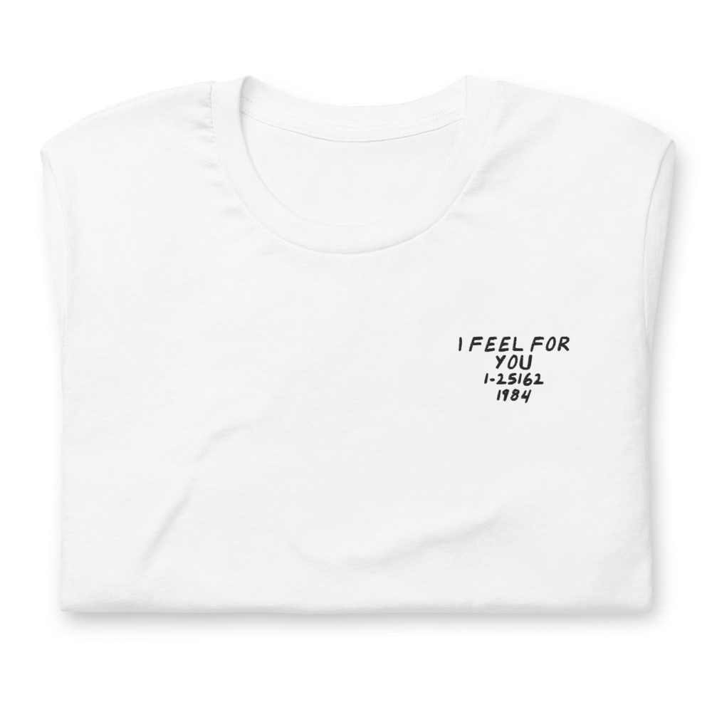
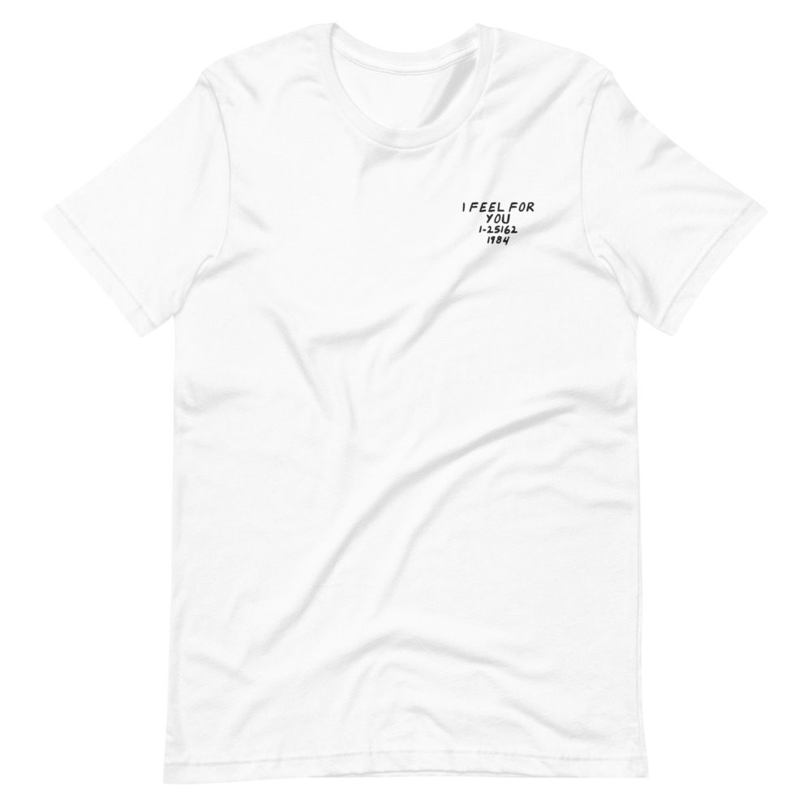

Chaka Khan – I Feel For You
Melle Mel raps on the title track.
LP · Warner Bros. 1-25162 · 1984
Ungraded, checked before it ships
Comes with its own shirt: a white tee embroidered on the chest with its title, catalog number and year in my handwriting. Pick a size at checkout. It’s made for you and ships on its own.


Buy $53
Play a track
Side 1
- This Is My Night4:38
- Stronger Than Before4:21
- My Love Is Alive4:42
- Eye To Eye4:38
- La Flamme4:27
Side 2
- I Feel For You5:44
- Hold Her5:14
- Through The Fire4:45
- Caught In The Act3:45
- Chinatown4:37
Vocals
Chaka Khan
Backing Vocals
Chaka Khan, Mic Murphy, Cruz Sembello, Michael Sembello, Hamish Stuart, Mark Stevens, Alec Milstein, Joe Mardin, Keith “Plex” Barnhart
Drums
Steve Ferrone, John Robinson, Joe Mardin
Effects
Arif Mardin, Lew Hahn, Michael O’Reilly
Guitar
Paul Pesco, Dann Huff, Michael Sembello, Reggie Griffin, Steve Lukather, Michael Landau, Neil Johnson, Vadim Zilberstein
Keyboards
David Frank, Robbie Buchanan, John Robie, Danny Sembello, Don Freeman, Philippe Saisse, Reggie Griffin, David “Hawk” Wolinski, James Newton Howard, Steve Porcaro, David Foster, John Sepella, Keith “Plex” Barnhart
Synthesizer
David Frank, Philippe Saisse, Robbie Buchanan, John Robie, Danny Sembello, Don Freeman, Rob Mounsey, Reggie Griffin, David “Hawk” Wolinski, James Newton Howard, Steve Porcaro, David Foster, Keith “Plex” Barnhart
Bass
Nathan East, Reggie Griffin, David “Hawk” Wolinski
Drum Programming
The Sembello Brothers
Rhythm Guitar
Michael Sembello, Tony Maiden
Harmonica
Stevie Wonder
Rap
Grandmaster Melle Mel
Produced by Arif Mardin